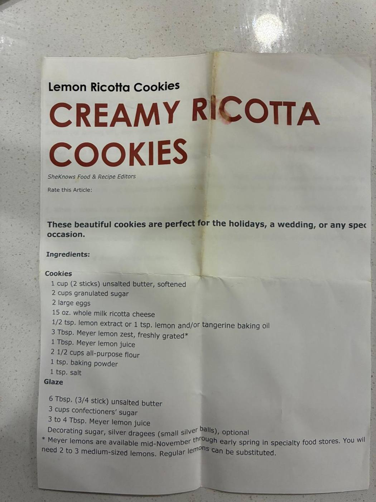
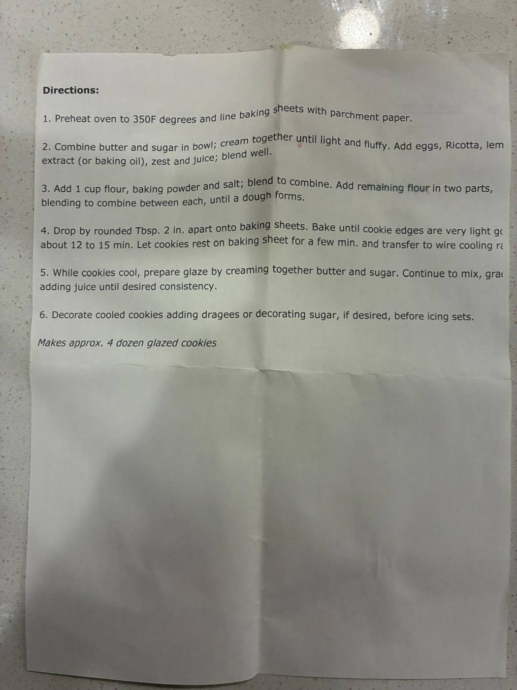

Desserts
Lemon Ricotta Cookies
From the kitchen of Mom
Oven350°F
Bake12–15 min
Makesabout 4 dozen


Mom's original card (front and back) · tap to enlarge
Ingredients
Cookies
Glaze
Method tap a step to mark it done
- Preheat the oven to 350°F and line baking sheets with parchment paper.
- Cream the butter and sugar until light and fluffy. Add the eggs, ricotta, lemon extract (or baking oil), zest and juice, and blend well.
- Add 1 cup of the flour with the baking powder and salt and blend. Add the rest of the flour in two parts, blending in between, until a dough forms.
- Drop rounded tablespoons of dough 2 inches apart onto the baking sheets.
- Bake 12–15 minutes, until the edges are very lightly golden.
- Let the cookies rest on the sheet for a few minutes, then move them to a wire rack.
- While they cool, make the glaze: cream the butter and confectioners' sugar, then keep mixing while you add the lemon juice a little at a time until it's the consistency you want.
- Glaze the cooled cookies and add dragées or decorating sugar, if you like, before the icing sets.
Mom’s tips
- Meyer lemons are in specialty stores from mid-November to early spring. You'll need 2–3 medium lemons. Regular lemons work too.